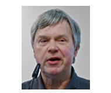

Conferencias
Salud & Robótica

Raquel Martínez-Unanue
Las personas que han sido operadas por robots se han favorecido en aspectos como tener una cirugía con mucha más precisión sin temblores humanos, una recuperación más acelerada ya que al ser más exactos pueden llegar con más facilidad en zonas inasequibles para la mano médica logrando así dañar menos el tejido sano alrededor de la zona afectada. Además, la utilización de dichas maquinas acorta la permanencia en el hospital, reduce el trauma operativo y proporciona una mejor visión estética a la herida pos operación del paciente. Esto ha sido un proceso estudio que ha tomado varios proyectos e investigaciones y que se han llevado a cabo en los últimos 10 años. Por otro lado tenemos que diferenciar entre la robótica quirúrgica y la robótica industrial.
Cuando nos referimos a la robótica en la industria, el software utilizado es muy diferente ya que se programa a un robot para que este realice acciones repetidas varias veces, mientras que, cuando hablamos de los robots quirúrgicos llegamos al punto que estas máquinas ya no serán totalmente independientes sino que estarán interrelacionadas con un cirujano especialista en esta área . De este modo podemos ver que las diferencias de la robótica quirúrgica con la industrial se presentan en el tipo de programación y en el trabajo individual o en conjunto.
Si quiere saber más acceda al DBLP de Raquel Martínez-Unanue.
Ejercito & Robótica

Hans-Jörg Kreowski

Los avances de la tecnología y de los diferentes subconjuntos de la Inteligencia Artificial no solo servirán para encontrarnos mejores anuncios en Internet, traducir lenguaje de forma instantánea o coches que se conduzcan solos. Tendrán un “familiar” más oscuro: armamento que funcione de forma autónoma.
Se trata de una renovación completa de los objetivos de la subsidiaria militar del grupo que, aunque opera como entidad privada, permanece bajo control financiero del gobierno federal ruso con un 51% de la participación. Kalashnikov apenas fabricaba más allá de fusiles, rifles y pistolas, tanto para civiles como militares, pero desde su incorporación dentro de la corporación-estatal Rostec, ha aumentado su catálogo hacia artillería ligera y drones que han dado como resultado esta nueva gama de productos bélicos “autónomos”.
Si quiere saber más acceda al DBLP de Hans-Jörg Kreowski.
Drones & Robótica

Vali Nazarzehi
Hace más de siglo y medio, Europa ya soñaba con aeronaves no tripuladas. En 1849, los austríacos reconquistaron Venecia gracias a unos globos aerostáticos sin piloto que transportaban bombas. Así pudieron sobrevolar los canales que impedían el acercamiento de la artillería. Los rústicos artefactos no tenían control alguno y fueron lanzados al aire con la esperanza de que explotaran al tocar el suelo veneciano.
Mucha gente se ha convencido de que los drones son la profesión del futuro y que simplemente convertirte en piloto puede salvarte la vida”, arguye Manuel Oñate, presidente de la Asociación Española de RPAS (aviones controlados de forma remota, por sus siglas en inglés).
Si quiere saber más acceda al DBLP de Vali Nazarzehi.